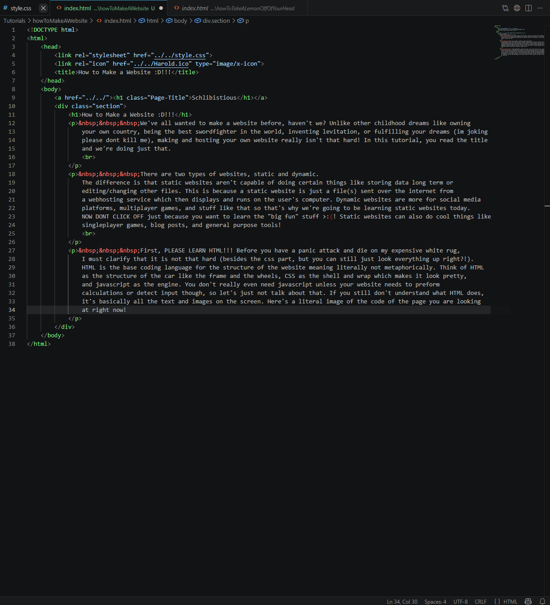
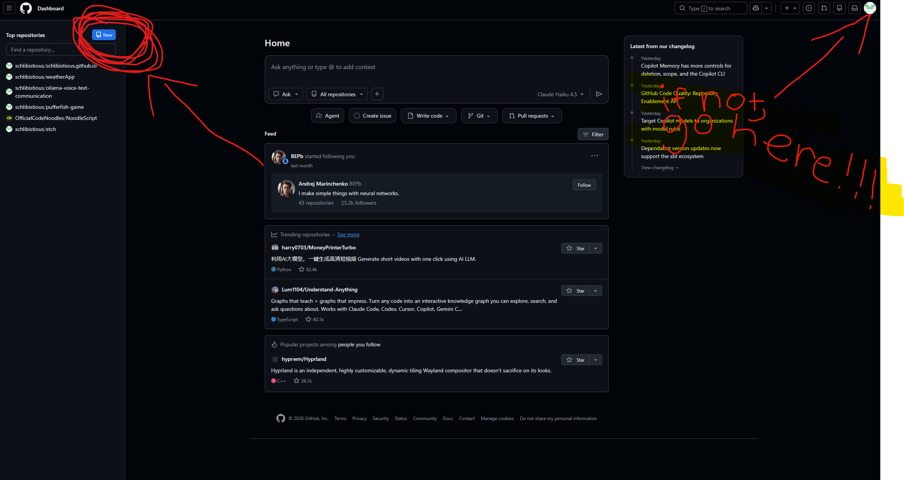
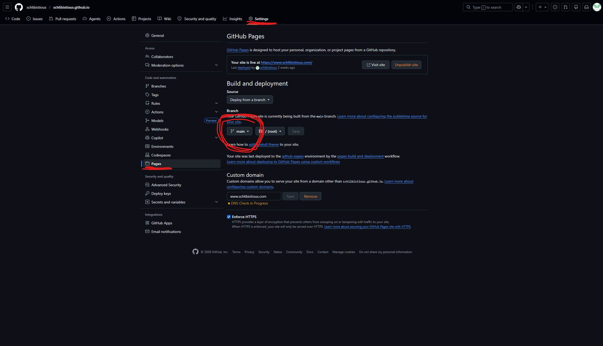

We've all wanted to make a website before, haven't we? Unlike other childhood dreams like owning
your own country, being the best swordfighter in the world, inventing levitation, or fulfilling your dreams (im joking
please dont kill me), making and hosting your own website really isn't that hard! In this tutorial, you read the title
and we're doing just that.
There are two types of websites, static and dynamic.
The difference is that static websites aren't capable of doing certain things like communicating to other individual computers or
editing/changing other files. This is because a static website is just a file(s) sent over the internet from
a webhosting service which then displays and runs on the user's computer. Dynamic websites are more for social media
platforms, multiplayer games, and stuff like that, so that's why we're going to be learning static websites today.
NOW DONT CLICK OFF just because you want to learn the "big fun" stuff >:(! Static websites can also do cool things like
singleplayer games, blog posts, and general purpose tools!
First, PLEASE LEARN HTML!!! Before you have a panic attack and start to die on my expensive white rug,
I must clarify that it is not that hard (besides the css part, but you can still just look everything up right?!).
HTML is the base coding language for the structure of the website, meaning literally and not metaphorically. Think of HTML
as the structure of the car like the frame and the wheels, CSS as the shell and wrap which makes it look pretty,
and javascript as the engine. You don't really even need javascript unless your website needs to preform
calculations or detect input though, so let's just not talk about that. If you still don't understand what HTML does,
it's basically all the text and images on the screen. Here's a literal image of the code of the page you are looking
at right now!

I'm gonna save an HTML coding tutorial for another time, but now that you have your html file, choose a static webhosting service. I like to use github pages, so I'll teach you how to use that (You can click off of this tutorial
now if you want to use something else!). Assuming you already have a Github account --please create one if you don't--, create a new repository.


PLEASE PLEASE PLEAAAASE DO NOT PUT SECRETS/PERSONAL INFORMATION IN THE HTML FILES BEING SENT TO THE CLIENTS COMPUTER!!!!!!!!! This info can be accessed through the inspect tool that most browsers have and because github is an open source code sharing platform!!!!